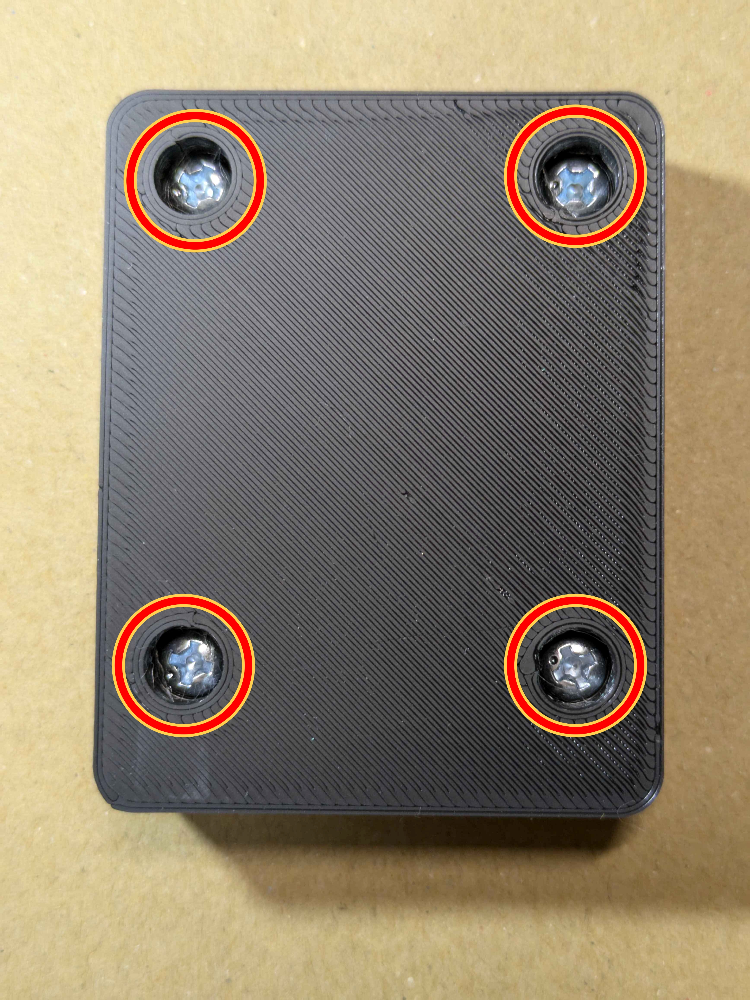

【説明】
1.「接続」で接続器を選択する(※ chromium ベース以外のブラウザでは接続できません。)
2.「感度送信」でデフォルトの感度を書き込むか、「感度要求」で感度を読み込む
3.感度を調整する
4.「感度送信」で接続器に感度を送信する
5.必要に応じて「保存」を行う（接続器のメモリに保存されます）
-------------↓各項目の説明↓-------------
感度


それぞれの感度です。これらの値は閾値になっていて、センサーからの電圧が一定を超えた場合にキー入力を行う様になっています。
したがって、値が低いほど感度が高くなります。
多重入力が発生する箇所は感度の値を高くしましょう。
Adelay
これはキーが入力されてから次にそのキーが入力を受け付けるまでの時間です。この値が大きいほど多重入力が起きにくくなります。
これは叩いた時にその部分のみで、多重入力が発生するようなら値を上げてください。
標準:1 （単位：ms）
Bdelay
これは面のキーが入力されてから次の面の入力を受け付けるまでの時間です。この値が大きいほど多重入力が起きにくくなります。
しかし、大きすぎると面の連打が伸びなくなります。
標準:12 （単位：ms）
Cdelay
これはBdelayの縁バージョンです。説明はBdelayと同様です。
標準:30 （単位：ms）
Ddelay
これは、面が入力されてから、縁の入力を制限する時間、兼縁が入力されてから、面の入力を制限する時間です。面を叩いたときに縁が多重してしまう場合、その逆の場合値を上げてください。
標準:32 （単位：ms）
Hdelay
これは公式アプリや一部のシミュレーターで必要な入力制限です。「メモ帳ではキー入力ができるけど、シミュレーターでは入力ができない」このような場合に値を設定してください。
標準:20 or 0 （単位：ms）
【感度調整のやり方】
※基本的には1.2.3を繰り返し、できるだけ高い感度、低いdelayを目指してください。
1.感度設定
最初にデフォルトの感度に設定してから、バチで叩き無反応が起きない値を探します。
2.delay調整
多重入力が起きない様にそれぞれの値を上げます。大体値を35以上になるとロール処理が失敗しやすくなります。。
3.感度を調整
delay調整でカバーできない多重入力が発生した場合は感度を下げてください。
【ファームウェアアップデートの方法】
1.接続器のネジを外し、基板を取り出します。

2.こちらのサイトに従い、ファームウェアをダウンロードし、更新してください。